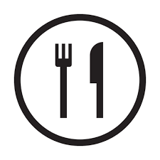
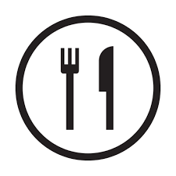

ONLINE SADQAH

WELFARE
MEDICAL
DASTARKHWAN


RO PLANT
EDUCATION


 Millions of people's life has changed, millions more awaiting your donation
Millions of people's life has changed, millions more awaiting your donation

(News-1 Dated:07-05-2019) Alhamdulillah Saylani Organized 200+ Locations For Iftar And Sehri In This Holy Month. More Details
INTRODUCTION
Established in May 1999 by famous spiritual and religious scholar Maulana Bashir Ahmed Farooqui, Saylani Welfare
International Trust was built on the fundamentals of breaking the cycle of poverty, alleviating the financial
troubles of the poor, giving people a chance to live a dignified life and spreading happiness.
We are an organization that believes in lighting up the lives of underprivileged people across the world. We
endeavor to provide the best quality services in areas including food, education, medical and social welfare free of
cost to people living in the dark. With over 60 different sectors, we feed thousands of hungry people each day,
hundreds more are given the hope of life through medical health care, many are educated to become leaders of
tomorrow and several are given the opportunity to stand on their feet financially.
Today, we are proud to say that our physical presence extends throughout Pakistan with a vast network of 125
branches operating in major cities including Karachi, Lahore, Islamabad, Rawalpindi, Hyderabad and Faisalabad. Apart
from Pakistan, we have overseas offices in the UK, USA and UAE as well. Our worldwide branches are operating under
the guidance of a team of over 2,000 working professionals who help almost 125,000 people on a daily basis.
We strongly believe that a little help goes a long way and our work would not be possible without the generous
support of our valuable donors. Our local and international donors have graciously lent us a hand by supporting our
causes and enabling us to serve the needs of people in need.
| 125,000 | 7,500 | 43,749 | 180,000 |
| DAILY DASTRAKHAN(MONTHLY) | FAMILY ADOPTION(MONTHLY) | MEDICAL(MONTHLY) | EDUCATION (MONTHLY) |
Copyright © 2020 Sylani Welfare